VISORD 4D ENGINE • SOC_ORD ECOSISTEMA
VISORD 4D
Visualizador Sociométrico
Código: HSPD-G1-T3-C2-V10-A4-ES-12 • 12 Jurados • Deliberación a Puerta Cerrada
Visualizador Sociométrico
Cargando Ecosistema 3D...
Código Master: HSPD-G1-T3-C2-V10-A4-ES-12 • G1 • T3 • C2 • V10 • A4 • ES • N=12
12 jurados se encierran en una sala en Nueva York (1957) para decidir el veredicto de un acusado. La votación inicial es 11 a 1 a favor de la culpabilidad. A lo largo de 3 fases temporales ($T_1, T_2, T_3$), la fuerza de los argumentos y la reconfiguración socio-afectiva transforman la matriz del grupo hasta alcanzar la unanimidad inversa.
En la notación ordinal SMIb, las elecciones positivas se registran mediante letras Mayúsculas ($E$), la cautela afectiva/rechazos con Minúsculas ($R$) y la indiferencia con ceros ($0$).
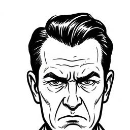
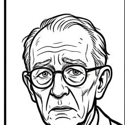
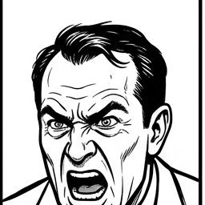
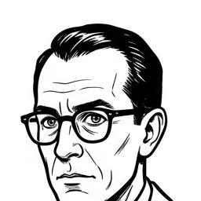
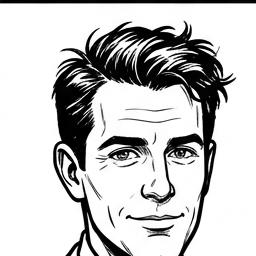
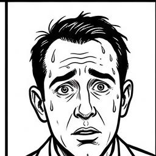
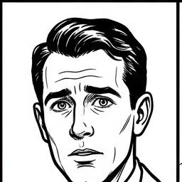
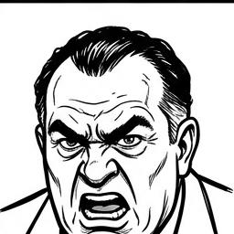
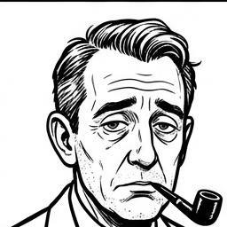
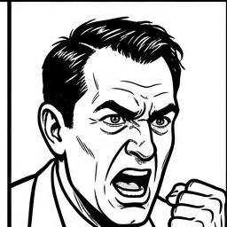
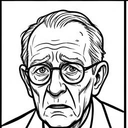
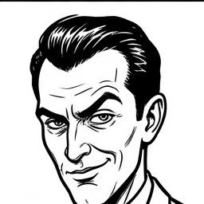
Estudio indexado en el repositorio Open Science bajo protocolo de anonimización Q-GID.
| ID (43) | Ev |
|---|
Código Master: LCBA-G1-T3-C3-V10-A4-ES-8 • G1 • T3 • C3 • V10 • A4 • ES • N=8
Tras la muerte de su segundo esposo, Bernarda Alba impone un luto riguroso e inquebrantable de 8 años a sus 5 hijas en un pueblo andaluz. El claustro doméstico, sofocado por la moral autocrática y el calor estival, se quiebra cuando la pasión reprimida por Pepe el Romano desencadena una encarnizada rivalidad entre las hermanas (especialmente Martirio y Adela), conduciendo inexorablemente a la tragedia y al colapso del bastón de mando.
Código Master: MOSCAS-G1-T4-C3-V10-A4-ES-8 • G1 • T4 • C3 • V10 • A4 • ES • N=8
Un grupo de niños británicos aislados en una isla desierta intenta establecer una sociedad democrática bajo el símbolo de la caracola (Ralph). Sin embargo, el pavor supersticioso a una "Bestia" invisible y la pulsión de caza liderada por Jack erosionan la norma civilizada. El grupo sufre un cisma irrecuperable que degenera en la barbarie tribal, la ejecución mística de Simon, el asesinato frío de Piggy y la caza a muerte del líder legítimo.